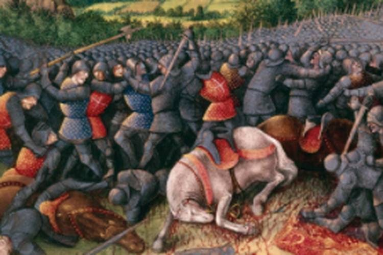

ZAMAN KEEMASAN PERADABAN ISLAM
Islamic Golden Age atau Zaman Keemasan Islam merupakan periode ketika peradaban Islam mengalami perkembangan pesat dalam bidang ilmu pengetahuan, matematika, kedokteran, astronomi, filsafat, sastra, dan kebudayaan. Periode ini umumnya dikaitkan dengan abad ke-8 hingga abad ke-13 Masehi, meskipun perkembangan ilmu pengetahuan di dunia Islam berlanjut setelahnya.
Pada masa ini, berbagai kota di dunia Islam menjadi pusat pembelajaran. Para ilmuwan mempelajari karya dari berbagai peradaban, melakukan penelitian, dan mengembangkan pengetahuan yang memberikan pengaruh terhadap perkembangan ilmu pengetahuan dunia.
Dinasti Umayyah berkuasa pada tahun 661 hingga 750 Masehi. Pada masa ini, wilayah kekuasaan Islam berkembang luas. Hubungan dengan berbagai bangsa memperkenalkan masyarakat Islam kepada beragam kebudayaan dan pengetahuan.
Dinasti Abbasiyah mulai berkuasa pada tahun 750 Masehi. Baghdad menjadi salah satu pusat pemerintahan, perdagangan, pendidikan, dan ilmu pengetahuan yang penting.
Pada masa Khalifah Harun al-Rasyid dan al-Ma'mun, kegiatan keilmuan dan penerjemahan memperoleh dukungan. Berbagai karya dari bahasa Yunani, Persia, dan Sanskerta dipelajari serta diterjemahkan ke dalam bahasa Arab.
Selain Baghdad, kota-kota seperti Kairo, Damaskus, Bukhara, Samarkand, dan Kordoba juga menjadi pusat perkembangan ilmu pengetahuan, perdagangan, seni, dan kebudayaan.
Matematika berkembang melalui kajian aljabar, aritmetika, dan metode perhitungan. Salah satu ilmuwan penting adalah Al-Khawarizmi yang memberikan kontribusi besar terhadap perkembangan aljabar. Istilah algoritma juga berasal dari bentuk Latin namanya.
Ilmu kedokteran berkembang melalui penelitian penyakit, pengobatan, dan penyusunan buku medis. Ibnu Sina menulis Al-Qanun fi al-Tibb, sebuah karya kedokteran yang pernah menjadi rujukan penting dalam pendidikan medis.
Al-Razi juga dikenal sebagai dokter dan ilmuwan yang menghasilkan karya penting dalam bidang kedokteran.
Astronomi berkembang melalui pengamatan benda langit, perhitungan posisi planet, dan penyusunan tabel astronomi. Pengetahuan ini membantu penanggalan, navigasi, dan penentuan waktu.
Al-Battani merupakan salah satu ilmuwan yang terkenal karena penelitian dan perhitungan astronominya.
Filsafat berkembang melalui kajian logika, etika, dan pemikiran tentang manusia serta alam semesta. Tokoh penting dalam bidang ini antara lain Al-Farabi, Ibnu Sina, dan Ibnu Rusyd.
Kajian kimia berkembang melalui pengamatan bahan dan berbagai teknik eksperimen. Tradisi ilmu kimia dalam literatur Arab dikaitkan dengan sejumlah ilmuwan, termasuk Jabir ibn Hayyan.
Ilmu geografi berkembang karena perjalanan dan perdagangan. Para ilmuwan menulis deskripsi wilayah, menyusun peta, serta mempelajari keadaan alam dan masyarakat. Al-Idrisi merupakan salah satu tokoh penting dalam sejarah geografi.
Al-Khawarizmi adalah ilmuwan matematika yang terkenal karena kontribusinya dalam perkembangan aljabar dan metode perhitungan.
Ibnu Sina merupakan seorang dokter dan filsuf. Karyanya yang terkenal adalah Al-Qanun fi al-Tibb, yang membahas berbagai pengetahuan kedokteran.
Al-Razi adalah dokter dan ilmuwan yang dikenal melalui karya-karya medis serta pengamatan klinisnya.
Al-Battani memberikan kontribusi dalam bidang astronomi, terutama melalui pengamatan dan perhitungan benda langit.
Al-Farabi merupakan filsuf yang memberikan kontribusi terhadap perkembangan logika, filsafat, dan pemikiran politik.
Ibnu Rusyd dikenal melalui karya filsafat, hukum, dan penjelasannya terhadap pemikiran Aristoteles.
Al-Biruni adalah ilmuwan yang mempelajari astronomi, matematika, geografi, dan berbagai kebudayaan.
Baitul Hikmah merupakan lembaga yang berkaitan dengan kegiatan keilmuan di Baghdad pada masa Dinasti Abbasiyah. Baghdad berkembang menjadi pusat penting bagi penerjemahan, pengumpulan naskah, dan pertukaran pengetahuan.
Karya-karya dari berbagai peradaban diterjemahkan dan dipelajari oleh para sarjana. Mereka tidak hanya menerjemahkan, tetapi juga mengembangkan gagasan dan pengetahuan baru.
Beberapa faktor yang mendorong kemajuan peradaban Islam pada masa tersebut adalah:
1. Dukungan penguasa terhadap pendidikan dan ilmu pengetahuan.
2. Berkembangnya perdagangan internasional.
3. Kegiatan penerjemahan karya dari berbagai peradaban.
4. Berkembangnya perpustakaan dan pusat pembelajaran.
5. Pertukaran ilmu dan kebudayaan antarbangsa.
6. Kontribusi para ilmuwan dalam berbagai bidang.
Karya para ilmuwan di dunia Islam memberikan pengaruh terhadap perkembangan ilmu pengetahuan di berbagai wilayah. Sejumlah karya berbahasa Arab diterjemahkan ke bahasa Latin dan dipelajari oleh para sarjana Eropa.
Pengetahuan dalam bidang matematika, kedokteran, astronomi, dan filsafat menjadi bagian dari pertukaran ilmu antarperadaban. Proses ini ikut berkontribusi terhadap perkembangan tradisi ilmiah di berbagai wilayah dunia.

Sejumlah pusat peradaban Islam mengalami perubahan akibat konflik politik, persaingan kekuasaan, dan peperangan. Salah satu peristiwa penting adalah penaklukan Baghdad oleh pasukan Mongol pada tahun 1258 Masehi.
Peristiwa tersebut menyebabkan kerusakan besar di Baghdad. Namun, perkembangan ilmu pengetahuan di dunia Islam tidak berhenti sepenuhnya karena berbagai pusat keilmuan tetap berkembang di wilayah lain.
Peninggalan penting dari periode ini meliputi perkembangan aljabar, karya-karya kedokteran, tabel astronomi, tulisan filsafat, peta geografis, serta tradisi penerjemahan dan penelitian.
Warisan tersebut menunjukkan bahwa ilmu pengetahuan dapat berkembang melalui penelitian, diskusi, pendidikan, dan pertukaran gagasan dari berbagai kebudayaan.
Copyright © 2026 - By Evan